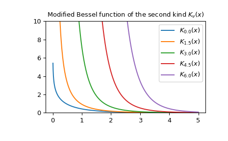

scipy.special.kv¶
-
scipy.special.kv(v, z) = <ufunc 'kv'>¶ Modified Bessel function of the second kind of real order v
Returns the modified Bessel function of the second kind for real order v at complex z.
These are also sometimes called functions of the third kind, Basset functions, or Macdonald functions. They are defined as those solutions of the modified Bessel equation for which,
\[K_v(x) \sim \sqrt{\pi/(2x)} \exp(-x)\]as \(x \to \infty\) [3].
- Parameters
- varray_like of float
Order of Bessel functions
- zarray_like of complex
Argument at which to evaluate the Bessel functions
- Returns
- outndarray
The results. Note that input must be of complex type to get complex output, e.g.
kv(3, -2+0j)instead ofkv(3, -2).
See also
Notes
Wrapper for AMOS [1] routine zbesk. For a discussion of the algorithm used, see [2] and the references therein.
References
- 1
Donald E. Amos, “AMOS, A Portable Package for Bessel Functions of a Complex Argument and Nonnegative Order”, http://netlib.org/amos/
- 2
Donald E. Amos, “Algorithm 644: A portable package for Bessel functions of a complex argument and nonnegative order”, ACM TOMS Vol. 12 Issue 3, Sept. 1986, p. 265
- 3
NIST Digital Library of Mathematical Functions, Eq. 10.25.E3. https://dlmf.nist.gov/10.25.E3
Examples
Plot the function of several orders for real input:
>>> from scipy.special import kv >>> import matplotlib.pyplot as plt >>> x = np.linspace(0, 5, 1000) >>> for N in np.linspace(0, 6, 5): ... plt.plot(x, kv(N, x), label='$K_{{{}}}(x)$'.format(N)) >>> plt.ylim(0, 10) >>> plt.legend() >>> plt.title(r'Modified Bessel function of the second kind $K_\nu(x)$') >>> plt.show()
Calculate for a single value at multiple orders:
>>> kv([4, 4.5, 5], 1+2j) array([ 0.1992+2.3892j, 2.3493+3.6j , 7.2827+3.8104j])